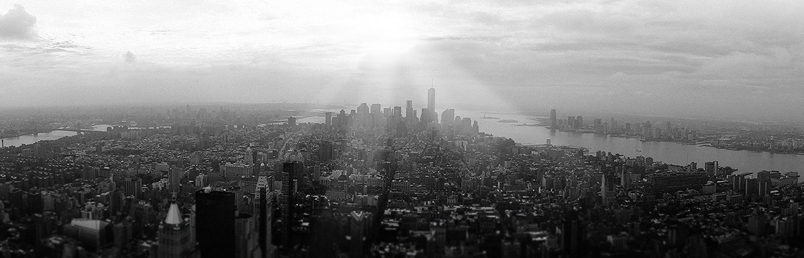
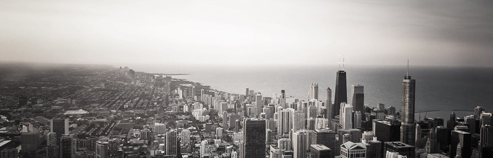

2016即将过去，保利商业不曾放缓奔跑的速度，我们以时代先锋的姿态，用优质的产品礼献岁末。
在如期迎客的背后，是保利人日夜兼程的奋战，创造无限商业价值，这般使命让我们的斗志只增不减 。
2016年12月21日，中山保利广场在岁末为当地消费者献上最诚挚的节日“礼物”。作为保利商业进驻中山的首个购物中心项目，中山保利广场尚未开业便引发当地市民高度关注。试业当天，闻讯而来的消费者更是让现场火爆非凡。
5万平方米的中山保利广场，深挖周边社区居民需求，以“懂你，更懂生活”的理念亮相。目前，项目招商率逾95%，若比邻社区商业中心、保利国际影城、众歌纯氧KTV、靓家居、美力恒健身俱乐部、卡迪龙奇幻世界、泰好味等知名品牌已进驻，开放当日超低折扣吸引消费者蜂拥而至。项目情景体验化的设计，时尚气质的氛围营造，吃喝玩乐购应有尽有，为中山市民带来休闲娱乐互动新体验。

保利广场地处中山市城市北扩主轴，雄踞港口未来发展核心，区位优越、交通便捷，周边商业需求旺盛，作为率先进驻该区域的保利广场更是抢占市场先机，区域布局战略意义显而易见。 3000平方米的若比邻社区商业中心率先在中山保利广场开门迎客，作为项目最大主力店、保利商业迄今为止最大的若比邻，可谓颜值、体量“双高”！用心塑造“温情”，提供品质便捷服务，若比邻重塑社区生活新体验。作为若比邻核心产品之一的比邻超市，此次更是诚意十足。拥有近万种单品，让顾客在家门口就能买到最喜爱的进口商品。进口水产品加拿大龙虾、新西兰半壳青口贝、秘鲁鱿鱼花比比皆是，产地直供的进口水果，无农药无重金属的健康蔬菜一应俱全，让来到现场的市民无不惊喜，“楼下来了个好邻居啊！”提到若比邻，怎能少得了它的另一特色社区客厅“邻空间”的身影呢？开业首日，装饰一新的邻空间就吸引了广大市民纷纷做客。未来，邻空间将举办一系列趣味社区主题活动，为社区居民提供邻里社交的休闲空间及多样化的便民服务，请大家拭目以待吧！
